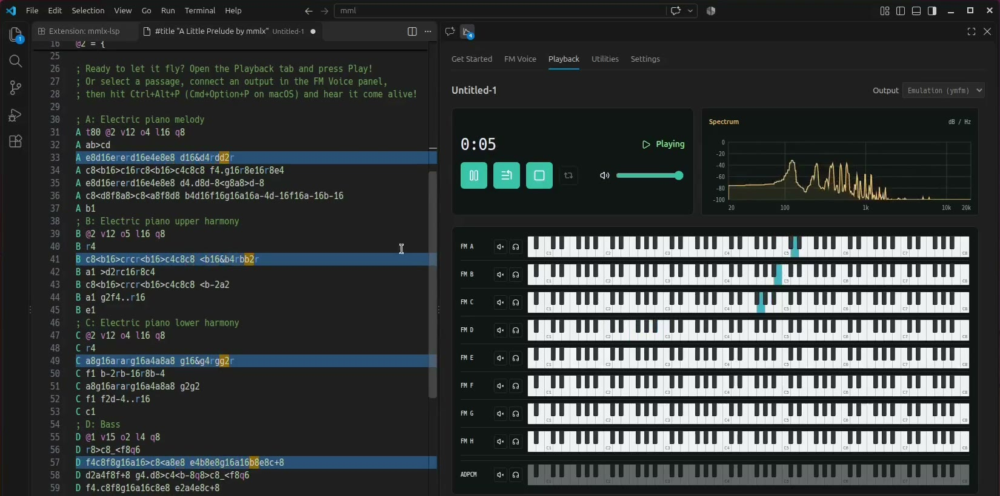
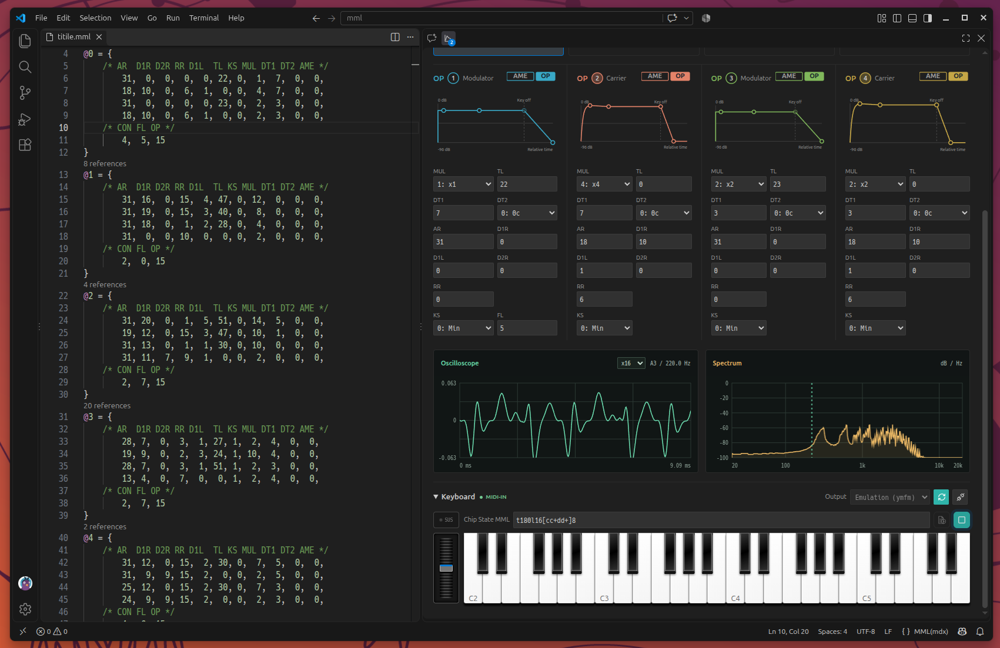
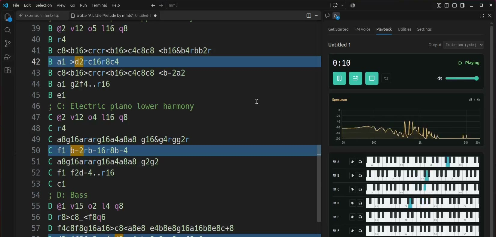

An editor that understands.
Syntax highlighting, diagnostics, completions, and parameter hints help you move from an idea to working MML.
MML TOOLS FOR VS CODE & HELIX
Install the VS Code extension and start making chip music right in your editor. Open the included sample, write a few notes, and listen with built-in emulation.

THE CREATIVE WORKFLOW
A language server that understands your MML, with a VS Code workspace for exploring sound. Stay close to your source while you compose, shape, and listen.
Syntax highlighting, diagnostics, completions, and parameter hints help you move from an idea to working MML.
Edit FM parameters alongside your source, explore operator envelopes, and audition sounds with a keyboard or MIDI input.
Play MML in VS Code and follow highlighted notes in the editor while channel keyboards reveal the music in motion.
A CLOSER LOOK
Explore mmlx-lsp in VS Code.

01 / FM VOICE
Place the cursor in a voice definition to explore its YM2151 operators. Edit parameters in the panel or the source, then audition the result.

02 / PLAYBACK
Listen to your active MML, including unsaved edits. Playback highlighting connects what you hear to the notes and rests in your source.
03 / REAL-CHIP PLAYBACK
Connect an optional NanoDrive8 to play your MML on real YM2151 FM and OKIM6258 ADPCM hardware. You can also audition FM voices with the panel keyboard or MIDI input.
Explore NanoDrive8 ↗Image: NanoDrive8 project
READY WHEN YOU ARE
Install the extension, open the included sample, and press play. No Rust, Node.js, or separate build tools required.
Using Helix? See the native installation guide ↗